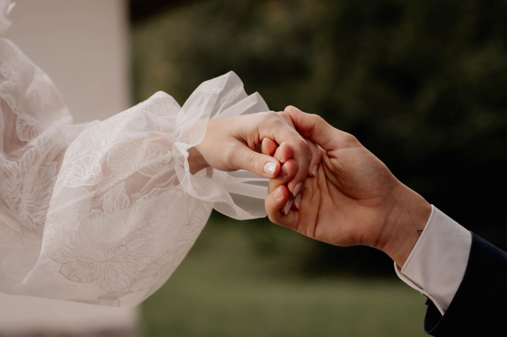

Die Sommerhochzeiten 2024 gehen langsam zu Ende, und es ist an der Zeit, einen Blick auf die kommenden Herbst- und Wintersaisons zu werfen. Diese Jahreszeiten bieten eine ganz besondere Gelegenheit für deine Traumhochzeit.

Die Magie der kühleren Monate
Herbst und Winter sind nicht nur Zeiten des Wandels, sondern auch der Verwandlung. Die kühleren Monate bringen eine ganz eigene, charmante Atmosphäre mit sich, die Sommerhochzeiten einfach nicht bieten können. Die goldene Farbenpracht des Herbstes, mit seinen warmen Tönen von Rot, Orange und Braun, schafft eine unglaublich stimmungsvolle Kulisse.
Kostenersparnis und Verfügbarkeit
Die Herbst- und Wintersaison bietet oft erhebliche finanzielle Vorteile. Viele Hochzeitsdienstleister senken in diesen Monaten ihre Preise. Diese Einsparungen ermöglichen es dir, das Hochzeitsbudget effizienter einzusetzen oder zusätzliche Elemente hinzuzufügen, die du dir vielleicht im Sommer nicht leisten könntest.
Während die Sommermonate oft von Hochzeiten überflutet sind, hast du im Herbst und Winter eine viel größere Auswahl an Terminen und Locations.
Kreative Dekorationsmöglichkeiten
Die winterliche Kühle kann durch elegante, warme Akzente wie Fackeln, Kaminfeuer und gemütliche Decken ausgeglichen werden. Der Herbst bietet die Möglichkeit für eine rustikale und erdige Dekoration mit Kürbissen, Eichenlaub und gedämpften Lichtern.
Wettervorteile und Planungstipps
Während im Sommer oft drückende Hitze herrscht, genießen wir in den kühleren Monaten eine angenehmere Temperatur. Mit der richtigen Planung kannst du sicherstellen, dass auch unvorhergesehene Wetterbedingungen deinen Hochzeitstag nicht beeinträchtigen.